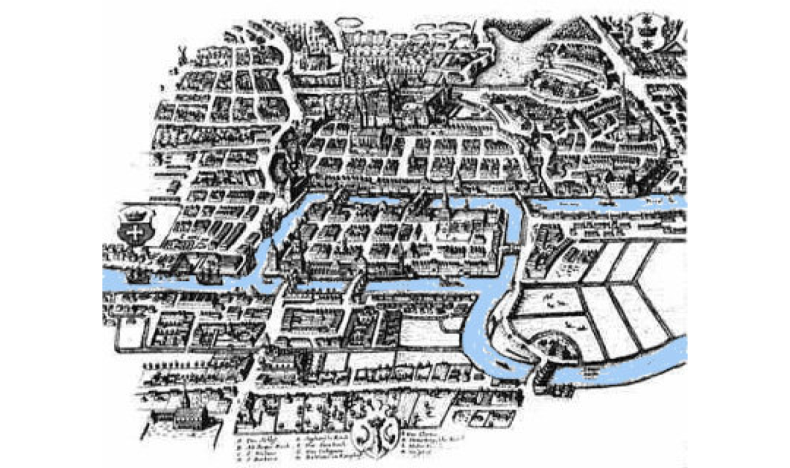
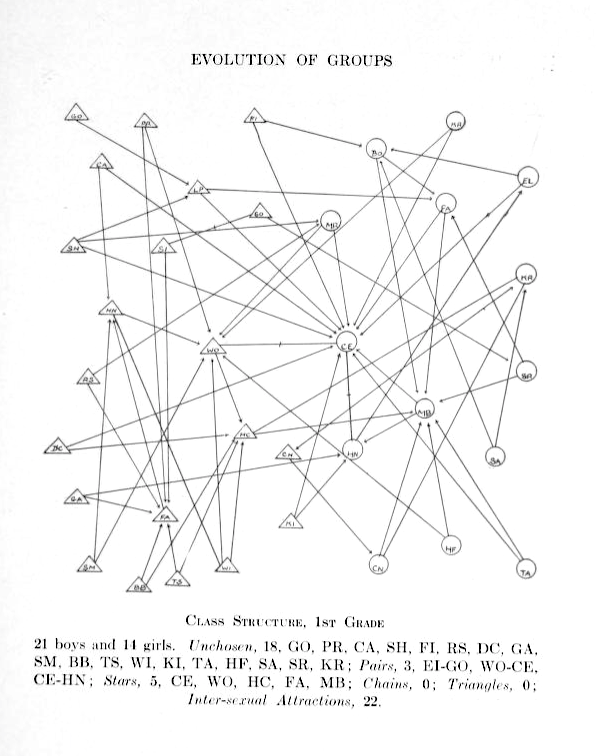
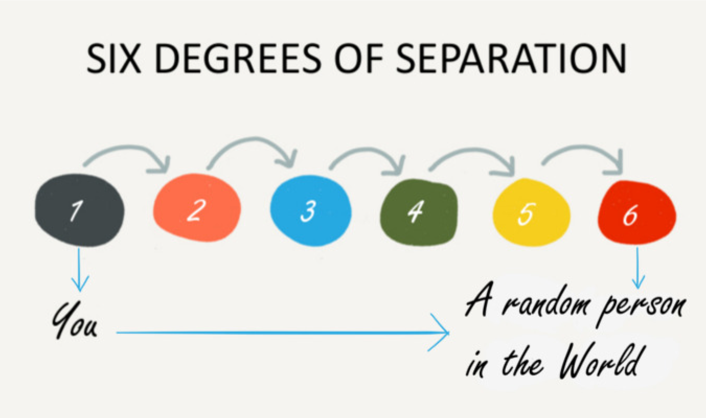
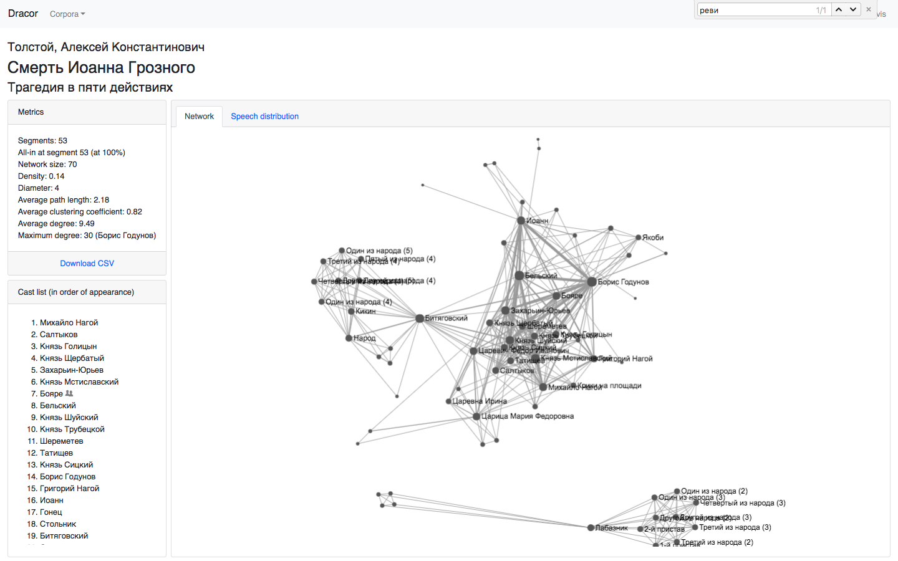
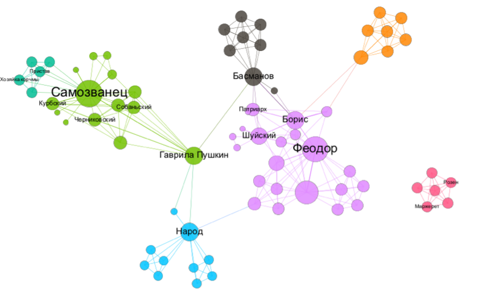
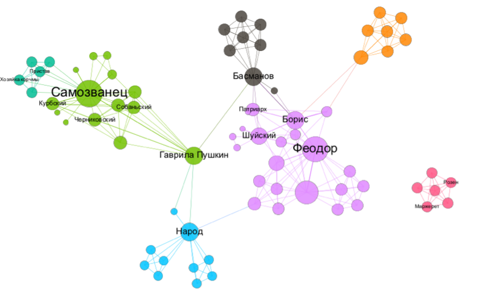

Сетевой анализ
...и его неочевидные применения
Что сейчас будет
- Что за сети? Что за анализ? Небольшое введение
- Что можно превратить в сеть и исследовать как сеть?
- Те самые «шесть рукопожатий»: сети (графы) в реальном мире
- Пушкин на посылках: сети в гуманитарных науках
- Как это делать: начнем разговор о технологиях
Что за сети?
Сеть (граф)

состоит из узлов...

...и ребер

Что можно представить в виде сети?
Да все что угодно

Включая резульататы извлечения информации
А еще если посмотреть сверху, это похоже на
Острова и мосты между ними
Задача о мостах Кёнигсберга

Так появилась теория графов

Транспортные сети
Направленный граф

А вот еще один транспортный граф (сеть)

Кстати, откуда он знает, сколько мне ехать?

Взвешенные графы

Интернет — по определению сеть

Wikipedia тоже

Кстати
Данные из Википедии можно вытаскивать через DBpedia или Wikidata (с помощью SPARQL)

...и конечно, социальные сети

Попробуем живьем!
Но вообще-то это настоящая наука
Анализ социальных сетей
Начало в 1930-е: Курт Левин, Джейкоб (Якоб) Морено

обновленная версия на сайте Мартина Гражана (Martin Grandjean)
Анализ социальных сетей
Манчестерская школа антропологии (Макс Глакман и другие) в 1950-е

Анализ социальных сетей
Гарвардский прорыв ('Harvard Breakthrough') в 1960-е (Харрисон Уайт и другие)

Те самые шесть рукопожатий
Это придумал Стэнли Милгрэм

Small World Experiment

Small World Experiment

Сетевой анализ в гуманитарных науках
Кто кого знал в Британии 500 лет назад?
- Проект Six Degrees of Francis Bacon (шесть рукопожатий Фрэнсиса Бэкона)
- Более 13.000 человек, более 200.000 связей
- Извлечено из Oxford Dictionary of National Biography
- sixdegreesoffrancisbacon.com
People of Medieval Scotland

RusDraCor
(Shiny RusDraCor)

Но... зачем?
Наглядность + математическая строгость (#WinningCombo!)

Это называется степень узла
Степень A = 5
А здесь что можно сказать?

Это называется betweenness centrality (центральность по посредничеству / нагрузка)
Сетевой анализ позволяет нам
- Вычислять значимость отдельных узлов по разным критериям центральность
- Анализировать пути
- распространения информации
- передачи болезней
- транспортировки ресурсов
- А еще — извлекать сообщества
Извлечение сообществ: Karate Club

Извлечение сообществ: Karate Club
- Антрополог Уэйн Зэкэри (Wayne Zachary) изучал небольшой карате-клуб с 1970 по 1972
- Он записывал неформальные связи между участниками за пределами клуба
- Во время исследования случился конфликт между руководством и инструктором
Извлечение сообществ: Karate Club
- Половина участников ушла вместе с инструктором делать новый клуб
- Вторая половина осталась (или совсем бросила карате)
- Зэкэри написал программу, которая на основе собранных до раскола данных пытается предугадать границы раскола группы
- Ссылка на статью Зэкэри (1977)
Матрица (таблица) связей -- исходные данные

Сеть этих связей

Моя визуализация Karate Club

Karate Club Club
Шуточное сообщество, куда принимают каждый год первого человека, упомянувшего Karate club на научной конференции по сетевому анализу
Сети в вымышленных мирах
...не ограничиваются литературой!

Предыстория
Donald Knuth. Stanford GraphBase (1994)

Предыстория
Schweizer T., Schnegg M. Die soziale Struktur der. „Simple Storys“: Eine Netzwerkanalyse. (1998)

Что показал сетевой анализ вселенной Marvel?
Что вселенная Marvel вращается вокруг Капитана Америки
Но это же банально!
А еще, возможно, вскрыло стратегию продвижения супергероев

Гордость и предубеждение, Алиса и кролик, Ромео и Джульетта…
- James Stiller, Daniel Nettle, and Robin I. M. Dunbar (2003) The Small World of Shakespeare’s Plays.Human Nature 14(4):397---408.
- “Weak Links and Scene Cliques Within the Small World of Shakespeare,” Journal of Cultural and Evolutionary Psychology 3, no. 1 (2005)
- Elson, D. K., Dames, N. and McKeown, K. (2010), Extracting Social Networks from Literary Fiction, Proceedings of ACL 2010, Uppsala, Sweden.
- J. Rydberg-Cox. Social Networks and the Language of Greek Tragedy. Journal of the Chicago Colloquium on Digital Humanities and Computer Science, 1(3):11, 2011.
- Agarwal A., Corvalan A., Jensen J., Rambow O. (2012), Social network analysis of Alice in Wonderland. Proceedings of the NAACL HLT 2012 Workshop on Computational Linguistics for Literature, pages 88–96, Montreal, Canada.
Алиса в стране чудес

«Переоткрытие» сетевого анализа в художественном тексте

Франко Моретти, «Теория сетей и анализ сюжета» (2011/2009)
Масштабирование

Можно смотреть динамику формальных метрик сети
Например, плотность


Плотности комедии и трагедии отличаются

А теперь — к русскому материалу!

Классицизм против романтизма
(rus.dracor.org)
 

Важный ли герой Гаврила Пушкин?

Пушкин на посылках и betweenness centrality

Битяговский (двойной агент)

Битков (соглядатай/двойник Пушкина)

Gephi (gephi.org)
- Простой инструмент для анализа сетей (не надо уметь программировать)
- "like Photoshop but for graph data" (gephi.org)
- Открытый и бесплатный
- Написан на Java и работает на всех основных ОС
- Расширяемый (можно создавать плагины)
- …немного глючный : )
CSV — cамый простой формат кодирования сетей
- Даня, Маша, 1
- Вася, Петя, 3
- ...